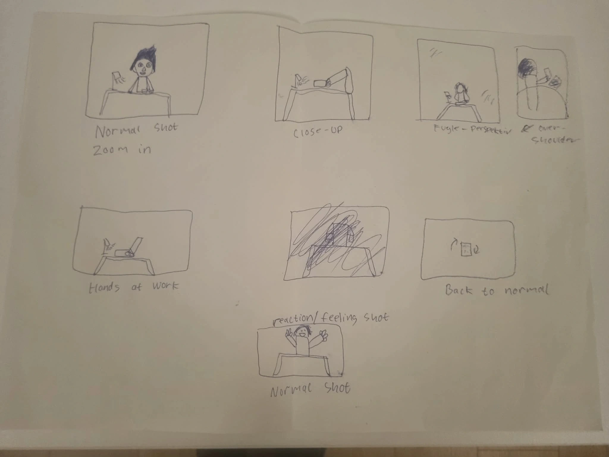
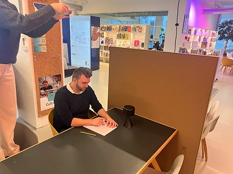
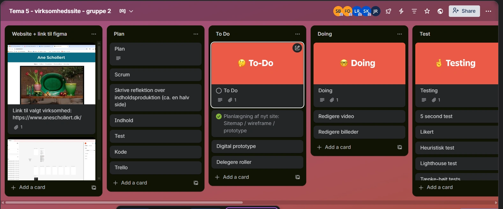
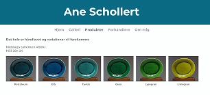
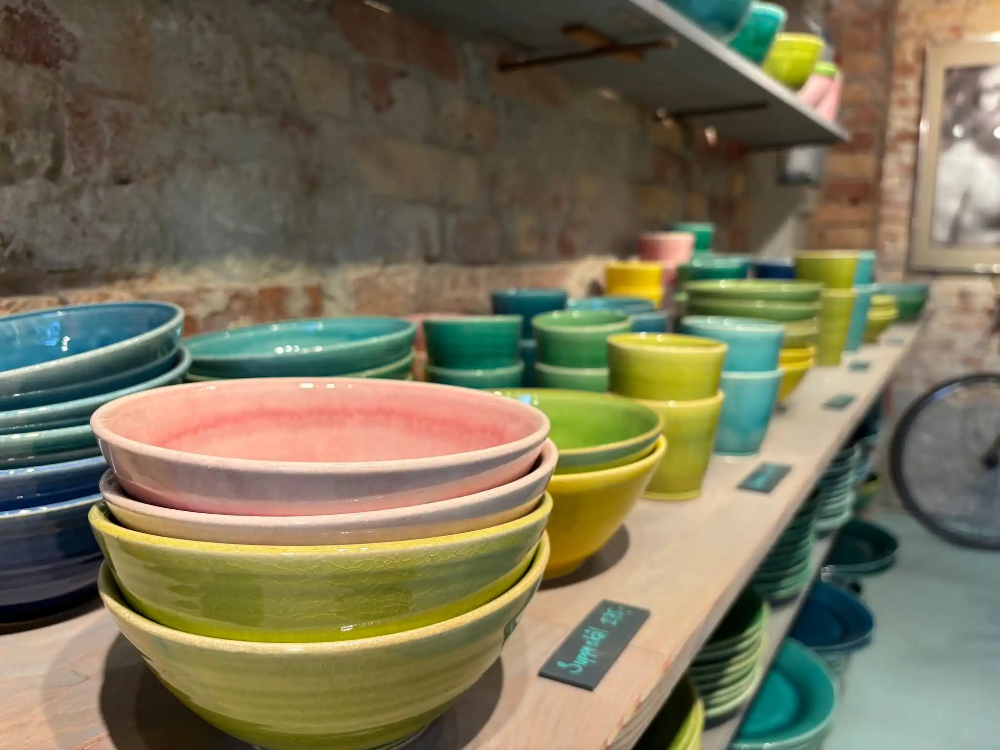
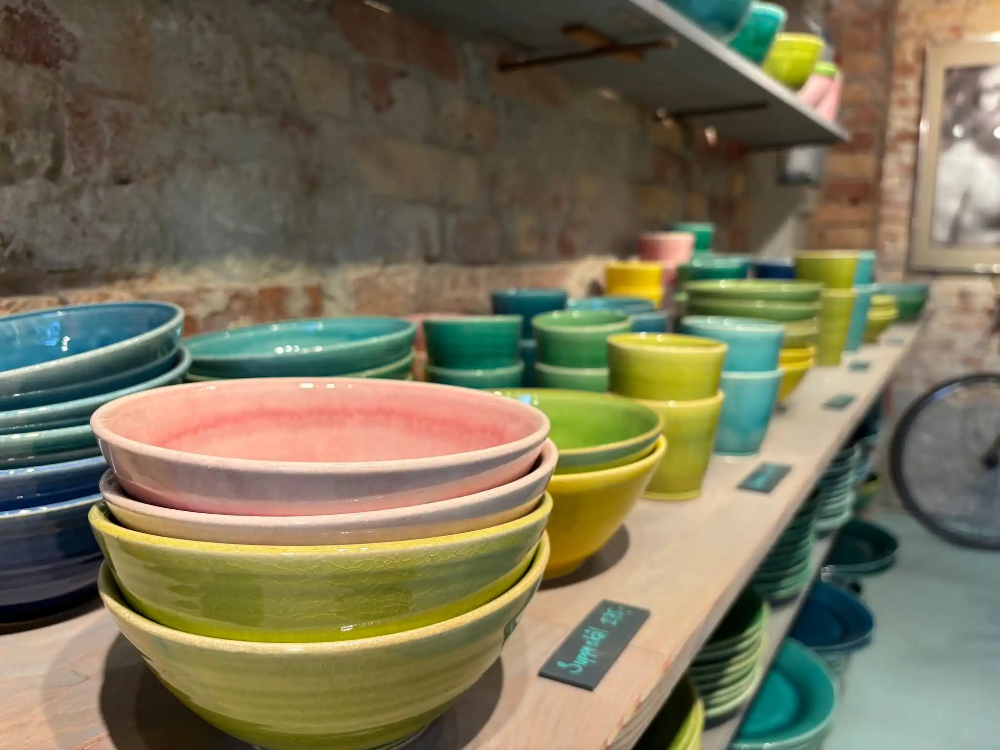
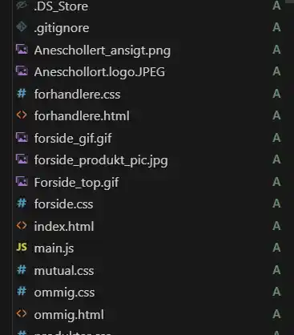
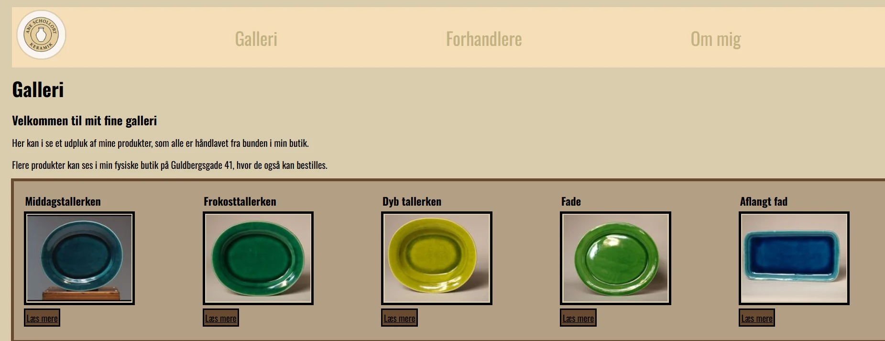
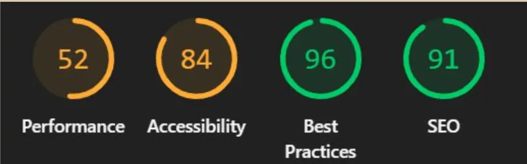

Tema 5 Grundlæggende Indhold
Kort introduktion
På dette tema blev vi introduceret til Premier Pro og gik mere i dybden med Branches i VSC.
Jeg vil komme ind på den læring jeg har fået med fra dette tema og hvordan jeg har anvendt det på på vores virksomhedssite herunder
Formålet
Formålet med dette tema var at producere indhold og arbejde med kodning i gruppe. Vi startede ud med at lave en video fortalt kun med lyd og billeder og senere skulle vi selv finde en virksomhed og redesigne deres eksisterende hjemmeside.
Proces
Viskelæderet
Efter at vi i gruppen havde skrevet flere ideer ned, blev vi enige om at lave en historie om et viskelæder. Derefter lavede vi et storyboard som viste hvordan historien udfolder sig samt hvilke kamera vinkler, vi valgte at gå med. Efter at have optaget videoen klippede vi filmen sammen og lagde musik på, så vi skabte en historie.
 Virksomhedssite
Vi havde fået til opgave at finde en virksomhed og redesigne deres hjemmeside. Vi blev præsenteret for programmet Trello som kan bruges til at planlægge og strukture de opgaver, man sætter sig for i gruppen. Trello gjorde arbejdet nemmere for vores gruppe at vi hver især kunne delegere opgaver ud i blandt os.
Her er et udsnit af den hjemmeside som vi valgte at redesigne. Det er en hjemmeside ved navn Ane Schollert, som er en keramiker i Guldbergsgade. Da vi havde fået aftalen i hus med Ane Schollert, opdelte hvilke sider vi hver især havde ansvar for. Vi lavede en 5 sekunders test af den eksisterende hjemmeside og nåede frem til at det var svært at forstå budskabet, da det var uklart om det er en hjemmeside til køb af billeder med keramik eller køb af keramik produkter.
Indholdsproduktion
Da det var et krav, at vi skulle have video på vores hjemmeside, tog nogle af os ud til butikken, for at skyde nogle optagelser og tage billeder til hjemmesiden. Vi gik efter nogle "preview" optagelser og billeder som kunne give indblik i virksomheden. Vi ønskede også at få en optagelse af at Ane Schollert stod og lavde keramik, men det var desværre ikke muligt.
 

Branches
Da vi havde samlet alt det indhold vi skulle bruge og var blevet enige om designet, kunne vi begynde at kode vores sider. Inden dette tema har alle kodet selvstændigt, men nu skulle vi kunne kode i den samme VSC og her blev vi introduceret til repositories og branches, som skulle gøre det muligt via push og pull, at vi alle kunne se ændringer, uden selv at skulle sætte det ind manuelt. Udover det, så er det også muligt at oploade til github via VSC automatisk. Vi lærte at en hovedregel er at man aldrig må ændre i main branch, da dette kan skabe problemer og for hver ændring, skulle der laves en ny branch. Jeg kan desværre ikke vise et billede af branches i vores opgave, da det er fjernet af en eller anden grund.
Her kan I se resultatet af den side som jeg stod for at lave i gruppen. Den originale hjemmeside havde både et galleri og en produktside, men jeg har valgt at slå dem sammen til én side, da det giver et bedre overblik og ikke skaber forvirring når man ser hjemmesiden første gang. Farvevalget er taget ud fra vores moodboards og styletile, da vi ville bruge en moderne farve der viser dybdeskarphed og gennemsigtighed.
Vi kørte en lighthouse test af hjemmesiden og som man kan se på "performance" og "accessibility" performer den ikke særlig godt. Det skyldtes at vi brugte for store billedfiler og ikke lavde dem om til "webp" format fra start og fordi vi i header laver en div, hvor man i stedet skulle have lavet en "li". Fejlen med div, fik vi fikset efterfølgende, da vi skulle fremlægge hjemmesiden, men jeg har nu lært, at der ikke må komme div i header.
Løsning
Med værktøjer som repositories, branches, Trello og Premier Pro, har vi skabt en hjemmeside som spreder sit budskab bedre ud samt fortæller en bedre historie om virksomheden end den eksisterende hjemmeside.
Resultat kan ses her:

Læring
Jeg har på dette tema lært om hvor stor en rolle klipning af video og kamera vinkler spiller for indholdet af en film og den historie filmen prøver at fortælle. Desuden har jeg også lært at i gruppearbejde, er det vigtigt at planlægge og holde struktur indenfor Trello. Det skaber bedre mulighed for at finde ud af, hvilke projekter man hver især er i gang med, så man f.eks. ikke kommer til at lave det samme og skabe forvirring. Så har jeg også lært, at det er en nemmere proces at man kan uploade sin kode direkte fra VSC til github, så man ikke manuelt skal uploade en mappe til github. Jeg har også lært at branches og repositories er rigtig gode at bruge i gruppearbejde, da man nemmere kan samle alt materiale med push og pull og ikke selv skal kopiere alting ind.